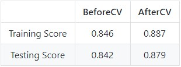
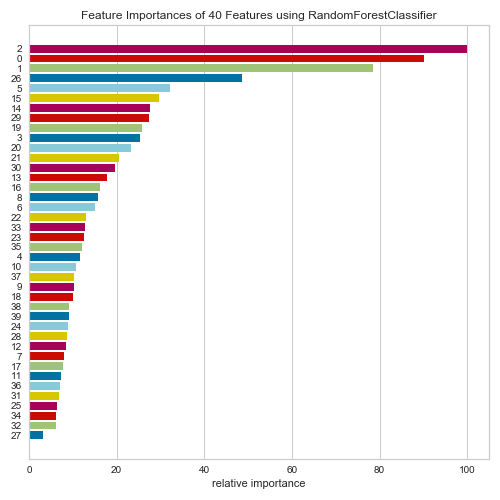
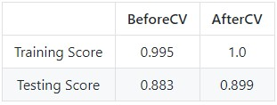
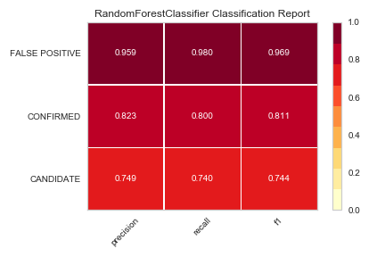

Problem
Over a period of nine years in deep space, the NASA Kepler space telescope has been on a planet-hunting mission to discover hidden planets outside of our solar system. To help process this data, I created two machine learning models capable of classifying candidate exoplanets from the raw dataset.
Process
The approach used for creating these models were based around using the Python library Scikit-learn. This library is extremely useful when dealing with numerical data, similar to the data provided by the Kepler Space Observatory. The first step with any dataset is to read in the data and perform some basic cleaning. The next step is to select the features (columns of data) and create a train test split. This basically separates the data you want to use in order to predict an outcome and then creates two groups of data. One group of data to train your model and another to test it. In simpler terms, the data will get randomly sorted into two groups, one group contain roughly 70% of the data points and the second group will have the other 30%. The separation does not have to be exactly 70% / 30% split but this is pretty common for most models. The larger set of data will be used to run algorithms on and make predictions and the smaller set of data will be used as a comparison for those predictions to see how accurate they are.
Before running any type of algorithm to make predictions, the data must be pre-processed (scaled). Once this is done, it is time to train the model. There are so many ways to train models and as a Data Scientist or Machine Learning Engineer, it is up to you to decide which is the best method of training. The first model run on the data was an SVM (support-vector machines), which was fairly accurate in determining the outcome. However, it is important to train and test multiple models to insure reliability and accuracy.

Support Vector Machine visualization
Results
SVM model results
Hyperparameter tuning is the next step to making the most accurate predictions. Hyperparameter tuning in a nutshell is deciding what features should be going into the model. For example, as a Data Scientist, this is where you would have to decide how deep a decision tree should be, what features go into a linear model, or how many neurons and layers will go into a neural network. There are so many more examples, but it would be too long to list. The next model tested was a Random Forest Model. Below is a chart displaying each features importance which is extremely helpful when hyperparameter tuning.
The next model tested was a Random Forest Model. Random Forest models are constructed by a multitude of decision trees. Unlike a normal decision tree, Random forest corrects for the habit of over fitting its training sets.

This model gave us a slightly higher accuracey than the SVM.
Random forest classification report.
Exoplanet Data Source by Kaggle via Kepler Space Observatory.